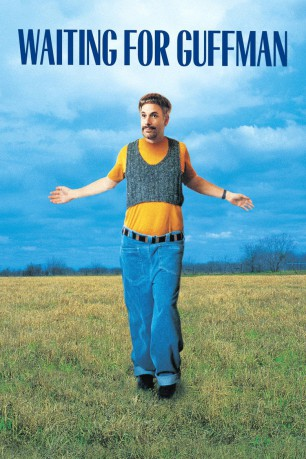

#4811 Wenn Guffmann kommt
Alternativ: Waiting for Guffman
 
 IMDB-Wertung: 7.6 / 10
IMDB-Wertung: 7.6 / 10  Metascore: 0
Metascore: 0 
Das Provinznest Blaine in Missouri feiert sein 150-jähriges Bestehen. Aus diesem Anlass will der drittklassige Regisseur Corky ein Musical aufführen. Seine Darsteller: die Leute von Blaine. Das Lampenfieber steigt, als der Broadway-Kritiker Guffman seinen Besuch ankündigt...
Jahr: 1996
Dauer: 80 Minuten
FSK:
Land: USA Studio: Castle Rock EntertainmentTonspuren: DD5.1 - ,
Untertitel:
Auflösung: 720p (1280x720) Größe: 2539 MB
Genre: Komödie
Regisseur:  Christopher Guest
Christopher Guest
Drehbuch: Josef Hader
Soundtrack:
Darsteller:
Datei: X:\1996\Wenn Guffmann kommt (1996, FSK, 1280x720).mkv seit 18.11.2016
Festplatte: HD 1996-2002
 Es gibt insgesamt 78 Filme in der Gruppe '1996'
Es gibt insgesamt 78 Filme in der Gruppe '1996'